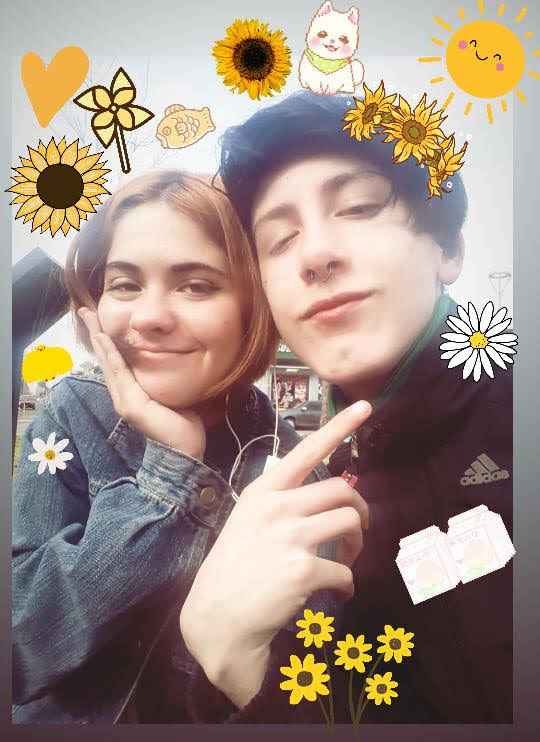
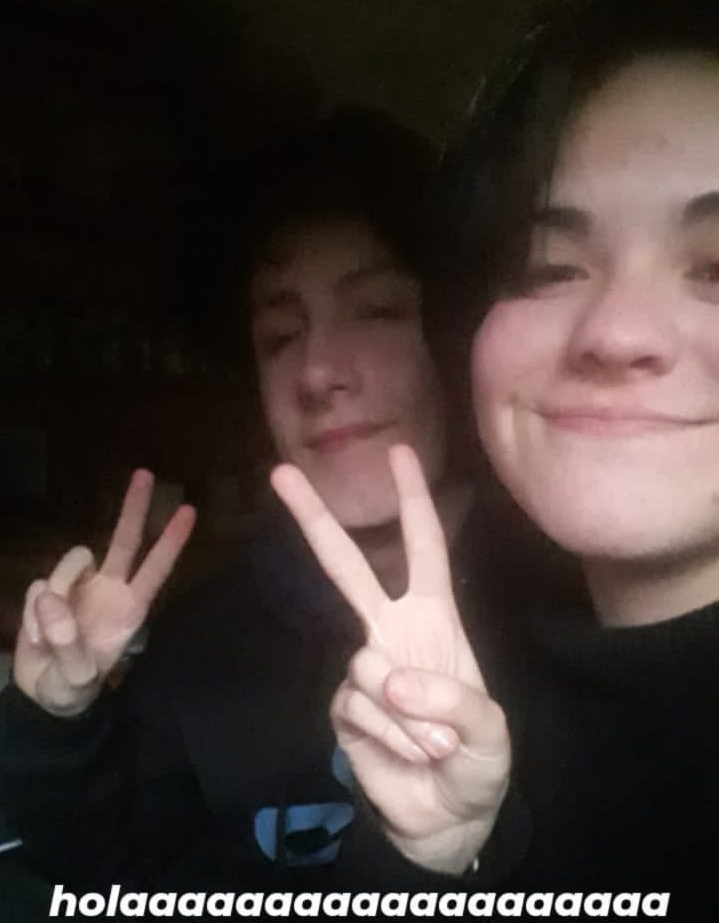
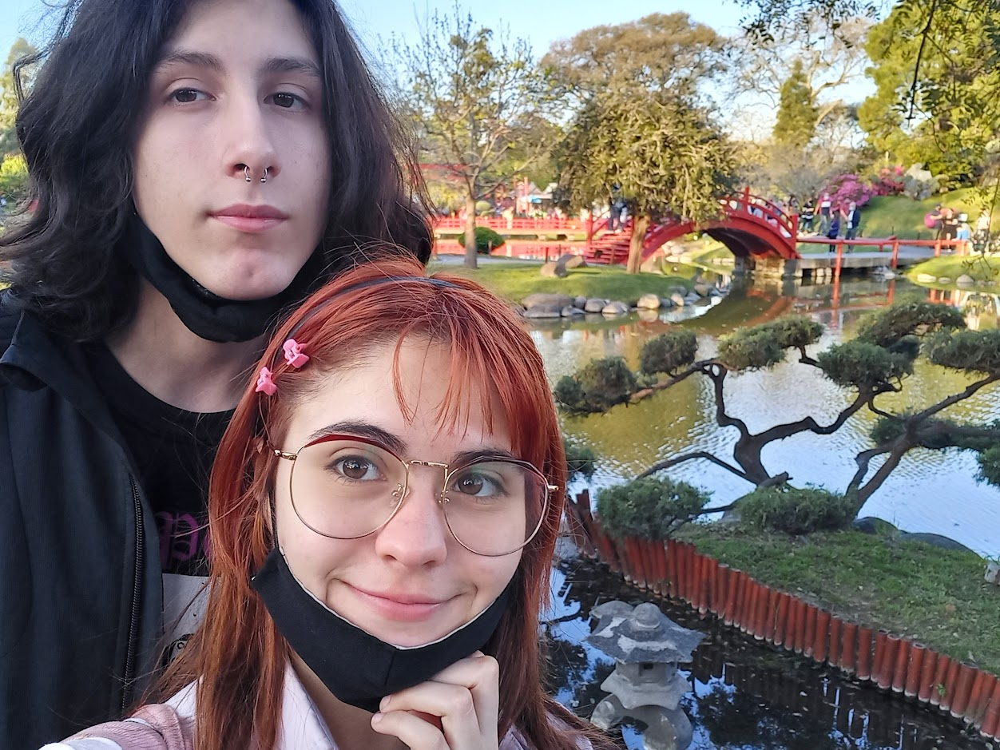
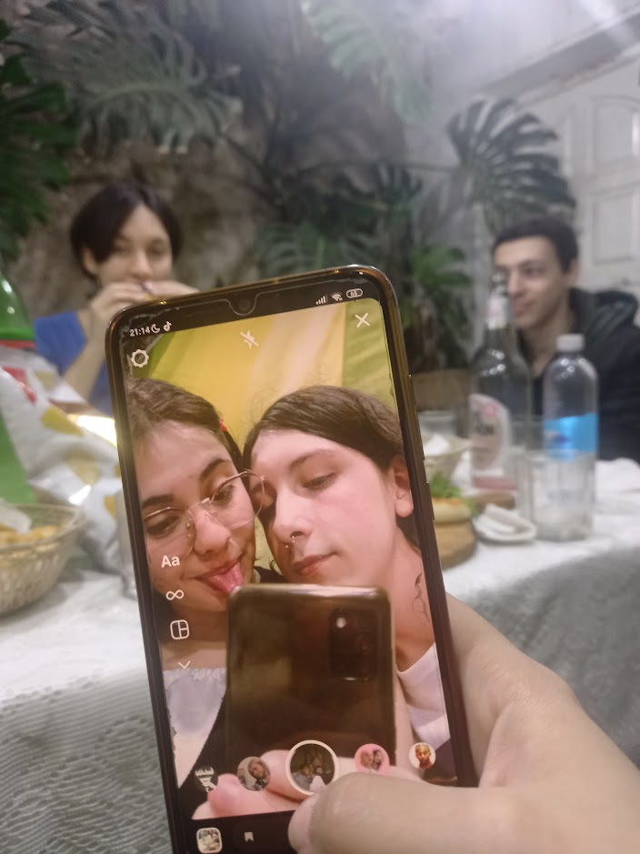

Playlist
FIESTA DE GATOS PUPIS!!! TODOS VINIERON A NUESTRO ANIVERSARIO!!!


-
 Nuestro primer beso uwu -
Cuando nos pusimos de nobios jejeje -
 Primer año de novios y todo el año en pandemia hasta que nos pudimos ver :3 -
 Con dolor de panza y ansiedad pasando un segundo aniversario ♥ -
 El año de la llegada de los mofus a Argentina y 3er aniversario... te amo -

Cuando fuimos a santa clara esta foto me da re viejocore me encnanta... Tenemos que ir mas de vacaciones